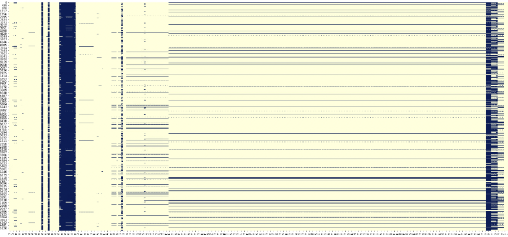
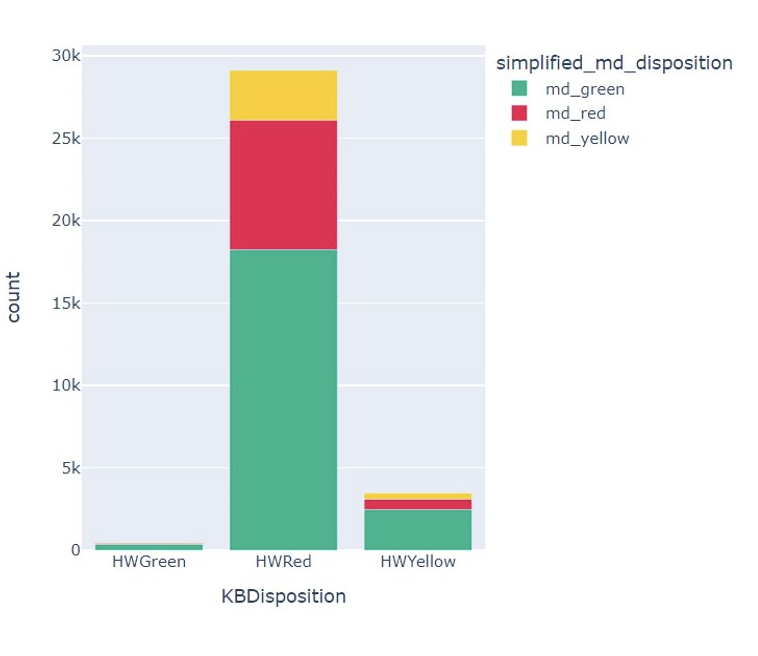
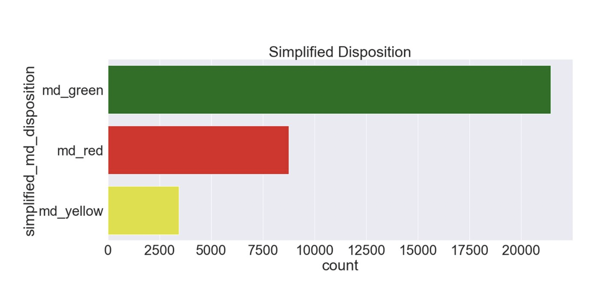
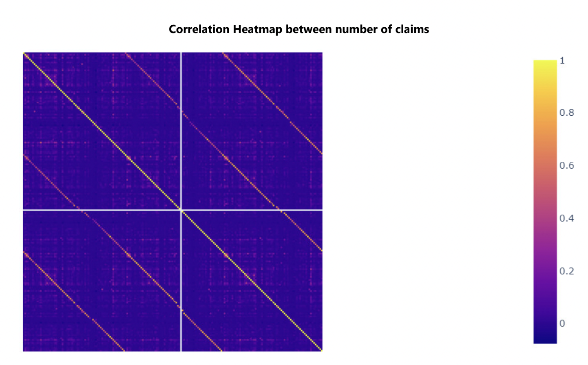
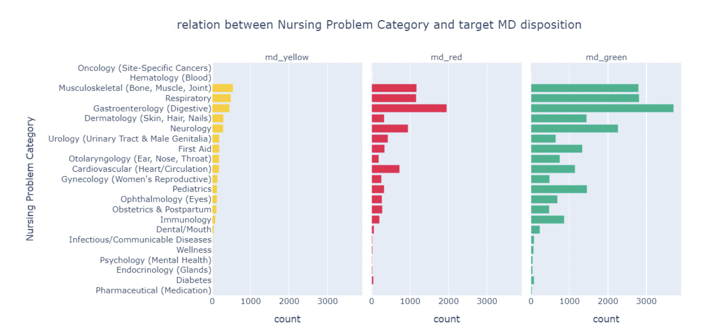
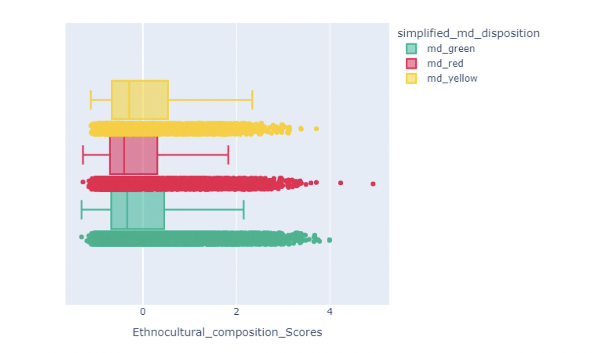

Predictive analytics to support HLBC 8-1-1 and HEiDi triage
Organization : UBC Digital Emergency Medecine
Authors : Flora Ouedraogo, Stepan Zaiatc, Tanmay Agarwal, Waiel Tinwala
Introduction
Explanatory Data Analysis
Preview
To start off, we read in our data along with the data dictionaty both located in the data folder :
data = pd.read_csv('data/HEiDi-ML-data.csv', engine='python')
data = data[~datal'simplified md disposition'].isna()1
data dict = pd.read excel ('data/HEiDi-ML-dictionary updated.xsx')
Data information

Our dataframe is relatively large with 33,597 rows and 307 columns. It contains a mix of numerical and object columns, with a majority being numerical(float and integer) columns.
Data Description

As seen in the result above, the count of non-null values for several column is significantly lower than the total number of rows in our data. This indicates a lot of missing values in our data.
Data Pattern and trends
binary_col = []
number claims = []
numeric col = []
primary_keys = ['CallID','PHN_e' ,'ENCOUNTER_ID']
for col in data.columns:
if re.search('n_claims.*', col):
number_claims.append(col)
elif len(data[col].unique()) <= 3 and data[col].isna().any():
binary_col.append(col)
elif len(data[col].unique()) > 2 and data[col].dtype != 'object' and col not in primary_keys:
numeric_col.append(col)
Missing values

The Problem of HEiDi Triage

Class Imbalance

Correlation between features
Correlation between types of claims



The aforementioned plots were extracted during the exploratory data analysis (EDA) conducted on the dataset. The complete EDA can be accessed #EDA
Methods and Algorithms
Methods
To develop a robust model that enhances nurse triaging, our project followed a structured data science research methodology, leading to key findings presented in the following sections. Our analysis began with an exploratory data analysis (EDA), a standard practice in data science projects, to gain a comprehensive understanding of the data and identify patterns and trends. The EDA findings guided us in eliminating redundant features and columns that did not contribute significantly to our predictions. Additionally, columns with more than 95% missing data were dropped to prevent noise introduction.
During the EDA phase, we employed various visualization techniques to draw insights and make informed decisions on feature selection. These techniques included examining correlation heatmaps for columns such as the number of claims, using matrix plots to identify missing values, and using bar plots to explore relationships between different columns based on the target variable levels (md_green, md_yellow, md_red).
After conducting the EDA and consulting with experts, we proceeded to preprocess the data. This involved dropping a number of columns based on the insights gained from the EDA analysis and expert consultation. The data was then split into training and test sets, with an 80% training and 20% testing split. The partitioning was done in a balanced manner using a specific column called PHN_e.
Several preprocessing steps were applied to various columns, including removing rows with missing values in the target class, filling in missing values with placeholders, converting string values into lists separated by commas, exploding columns such as chronic disease and invoice_feature, and extracting features such as the hour from the datetime feature. A notable preprocessing step was also performed on the px_DIN feature. Detailed information about all the preprocessing steps can be found #Scripts.
Following the preprocessing stage, we explored potential models for fitting based on expert consultation and literature review. The models we considered in our analysis included the Dummy Classifier, Decision Tree Classifier, Random Forest, Logistic Regression, and XGBoost. For detailed information on each of these models, please refer to the #algorithms.
After analyzing the performance of each model, we selected the best-performing model, referred to as the model, to build the dashboard for stakeholders. The results obtained from this model serve as the foundation for the dashboard, providing valuable insights for stakeholders involved in the triaging process.
Algorithms
Dummy Classifier
Decision Tree Classifier
Random Forest
Logistic Regression
XGBoost
Project Analysis
Scripts
Preprocessing Script
To execute the preprocessing script preprocessing4.py , which includes all the preprocessing steps, run the following command:
Below is the detailed structure and explanation of the script:
Preprocesschronic_diseaseFeature
Extract Hour fromFinalDispositionAtLocalFeature
ConvertIdVariables into Categoricals
PreprocessCallServiceTaggedFeature
Functions/Methods (Split data)
Save Preprocessed Data to Feather Format
Split Data Script
The following is a docstring of the script split_data.py
def split_data(clean_data: pd.DataFrame, col: str, seed: int) -> tuple:
"""
Splits the clean data into training and test datasets based on the specified column.
Parameters:
clean_data (pd.DataFrame): The clean data to be split.
col (str): The column name used to split the data.
seed (int): The random seed for shuffling the unique values.
Returns:
tuple: A tuple containing two pd.DataFrame objects: (train_df, test_df).
train_df: The training dataset.
test_df: The test dataset.
Notes:
- This function shuffles the data based on the specified unique identifier column and
splits the data into training and test sets.
- The split ratio is 80:20, where 80% of the data is used for training and 20% is used for testing.
- A fixed seed is used for reproducibility.
- The function drops columns that meet either of the following conditions:
1. The column has fewer than two unique values in the training dataset.
2. The column used for splitting the data.
- The "index" column is dropped as well.
Examples:
train_data, test_data = split_data(clean_data, 'category', 42)
"""
DIN Decoder Script
The following is a docstring of the script din_decoder.py
def convert_din_to_text(din_list, group='TC2'):
Converts a list of DIN (Drug Identification Number) codes to corresponding text labels based on the specified group.
Parameters:
din_list (list): A list of DIN codes to be converted to text labels.
group (str, optional): Specifies the group to use for mapping DIN codes to text labels. Default is 'TC2'.
Returns:
list: A list of unique text labels corresponding to the input DIN codes.
Notes:
- This function reads the DIN classification data from the 'din_classification.json' file.
- Each DIN code in the input list is converted to a string.
- The function tries to find the corresponding text label in the DIN classification dictionary using the specified group.
- If the DIN code is not found or encounters an exception, it is labeled as 'Other'.
- The function returns a list of unique text labels.
Example:
converted_labels = convert_din_to_text(['123456', '789012'], group='TC2')
def decode_din(data, col_name, group='TC2'):
"""
Decodes DIN codes in a DataFrame column by applying the convert_din_to_text function.
Parameters:
data: The input DataFrame containing the column to decode.
col_name (str): The name of the column in the DataFrame to decode DIN codes from.
group (str, optional): Specifies the group to use for mapping DIN codes to text labels. Default is 'TC2'.
Returns:
pandas.DataFrame: A modified copy of the input DataFrame with the specified column decoded.
Notes:
- This function creates a temporary copy of the input DataFrame.
- The specified column values are split by ';' delimiter.
- The convert_din_to_text function is applied to the split values, using the specified group.
- The resulting text labels are stored in the modified copy of the DataFrame.
"""
Multi Label Binazer
The following is a docstring of the script mlb.py
def multi_label_binarizer(data: pd.DataFrame, col_name: str) -> pd.DataFrame:
"""
Perform multi-label binarization on a column in the given DataFrame.
Parameters:
data (pd.DataFrame): The input DataFrame containing the data to be binarized.
col_name (str): The name of the column to be binarized.
Returns:
pd.DataFrame: The resulting DataFrame after performing multi-label binarization.
The original DataFrame is concatenated with the binarized columns.
Notes:
- This function performs multi-label binarization on a specified column in the given DataFrame.
- The column is expected to contain lists or arrays of labels.
- Each label in the column is treated as a separate binary feature, and a new column is created for each unique label.
- If a label appears in a row, the corresponding column value is set to 1; otherwise, it is set to 0.
Examples:
>>> binarized_data = multi_label_binarizer(data, 'labels')
"""
Column Heidi_visit Cleaning Script
The following is a docstring of the script heidi_visit_clean.py
def my_func(x):
"""
Maps a value to its corresponding key in the mapping dictionary.
Parameters:
x: The value to be mapped.
Returns:
str: The corresponding key if found in the mapping dictionary.
np.nan: If the value is not found in any of the dictionary's values.
Notes:
- This function iterates over the keys of the mapping dictionary.
- If the value is found in any of the dictionary's values, the corresponding key is returned.
- If the value is not found in any of the dictionary's values, np.nan is returned.
"""
def clean_heidi_visit_col(data):
"""
Clean the 'heidi VISIT REASON' column in the given DataFrame.
Parameters:
data: The input DataFrame containing the column to be cleaned.
Returns:
pandas.DataFrame: The input DataFrame with the 'heidi VISIT REASON' column cleaned.
Notes:
- This function performs several cleaning operations on the 'heidi VISIT REASON' column:
- Replaces '[\.0\\*,-]' with an empty string.
- Replaces '*/I' with an empty string.
- Replaces '&' with an empty string.
- Converts the column values to lowercase and removes leading/trailing whitespace.
- The my_func() function is applied to each cleaned value to map it to its corresponding key.
- The resulting mapped values are stored in the 'heidi_VISIT_REASON clean' column of the input DataFrame.
"""
Preprocessing heidi_visit Script
The following is a docstring of the script helper.py
def process_grouped(data, col, split):
"""
Process a grouped column in the given DataFrame by performing multilabel binarization.
Parameters:
data: The input DataFrame containing the grouped column.
col (str): The name of the grouped column to be processed.
split (str): The delimiter used to split the values in the grouped column.
Returns:
pandas.DataFrame: A DataFrame with the processed grouped column after multilabel binarization.
Notes:
- This function selects the specified grouped column from the DataFrame and fills missing values with 'MISSING'.
- The column values are split based on the provided delimiter.
- Multilabel binarization is applied to the split values using the sklearn MultiLabelBinarizer.
- The resulting binary features are stored in a new DataFrame, where column names are formatted as 'col__class'.
"""
def process_cat(data, col):
"""
Process a categorical column in the given DataFrame by performing various cleaning operations.
Parameters:
data: The input DataFrame containing the categorical column.
col (str): The name of the categorical column to be processed.
Returns:
pandas.DataFrame: The input DataFrame with the processed categorical column.
Notes:
- This function applies several cleaning operations to the specified categorical column:
- Replaces '[\.()\[\]*,-]' with an empty string.
- Replaces '/' with a space.
- Replaces '&' with 'and'.
- Replaces multiple spaces with a single space.
- Converts the column values to lowercase and removes leading/trailing whitespace.
- Replaces spaces with underscores.
- The processed values are stored back in the original DataFrame under the specified column name.
"""
ICD Codes Decoder Script
The following is a docstring of the script icd_codes_decoder.py
def convert_icd(x, granularity=2):
"""
Convert an ICD (International Classification of Diseases) code to its corresponding description based on the specified granularity.
Parameters:
x (str): The ICD code to be converted.
granularity (int, optional): Specifies the granularity level of the ICD code. Default is 2.
Returns:
str: The description of the ICD code at the specified granularity.
Notes:
- This function reads the ICD code mappings from the 'icd9_L2_codes.json' and 'icd9_L3_codes.json' files.
- The function tries to find the corresponding description based on the provided code and granularity.
- If the code is not found, it returns "Other ICD Code".
Example:
description = convert_icd('123456', granularity=2)
"""
def extract_codes(id_list):
"""
Extract unique ICD codes from a list and convert them to their descriptions.
Parameters:
id_list (list): A list of ICD codes to be extracted.
Returns:
list: A list of unique ICD code descriptions.
Notes:
- This function removes duplicate ICD codes from the input list.
- Each ICD code is converted to its corresponding description using the convert_icd function.
- The function returns a list of unique ICD code descriptions.
Example:
extracted_codes = extract_codes(['123456', '789012'])
"""
def decode_icd(data, col_name):
"""
Decode ICD codes in a DataFrame column by applying the extract_codes function.
Parameters:
data: The input DataFrame containing the column to decode.
col_name (str): The name of the column in the DataFrame to decode ICD codes from.
Returns:
pandas.DataFrame: A modified copy of the input DataFrame with the specified column decoded.
Notes:
- This function creates a temporary copy of the input DataFrame.
- The specified column values are split by ';' delimiter.
- The extract_codes function is applied to the split values.
- The resulting ICD code descriptions are stored in the modified copy of the DataFrame.
Example:
decoded_df = decode_icd(data, 'icd_column')
"""
def combine_icd_codes(data, col_names=['msp_dx', 'hosp_dx', 'ed_dx']):
"""
Combine multiple ICD code columns into a single column in the DataFrame.
Parameters:
data: The input DataFrame containing the ICD code columns.
col_names (list, optional): The names of the ICD code columns to combine. Default is ['msp_dx', 'hosp_dx', 'ed_dx'].
Returns:
pandas.DataFrame: The input DataFrame with the combined ICD code column.
Notes:
- This function creates a new column named 'all_icd_codes' in the DataFrame.
- The values from the specified ICD code columns are concatenated using ';' as the delimiter.
- The original ICD code columns are dropped from the DataFrame.
Example:
combined_df = combine_icd_codes(data, col_names=['column1', 'column2'])
"""
def multi_label_binarizer(data, col_name):
"""
Perform multilabel binarization on a column in the DataFrame.
Parameters:
data: The input DataFrame containing the column to perform multilabel binarization on.
col_name (str): The name of the column to be binarized.
Returns:
pandas.DataFrame: The input DataFrame with the binarized columns added.
Notes:
- This function creates a temporary Series by exploding the specified column.
- A count column is added to the temporary Series.
- The temporary Series is then pivoted to obtain a DataFrame with binarized columns.
- Missing values are filled with 0, and the column names are prefixed with 'col_name_'.
- The original column specified is dropped from the DataFrame, and the binarized columns are concatenated.
Example:
binarized_df = multi_label_binarizer(data, 'column_name')
"""
Imputation Techniques
Dropped Columns
The list of columns with their explantions can be found below:
| Dropped Columns | Reasoning Behind Dropping the Columns |
|:------------------------------------------|:-----------------------------------------------------------------------------------------------------------------------------------------|
| Callld | Unique identifier |
| PHN_e | Unique identifier |
| KBDisposition | Removed as it serves as our baseline model |
| RNDisposition | Removed as it is similar to our baseline model |
| FinalDispositionld | Duplicate column, already using FinalDisposition |
| FinalDispositionUserld | Model decision should be based on the patient's condition and other factors, not on who picked the call |
| Clientld | Do we want to learn if certain patients are using the service more than others? |
| CallOrigin | Data heavily skewed |
| CallLanquage | Data heavily skewed |
| ClientPossibleDuplicate | Data heavily skewed |
| EncounterType | Data heavily skewed |
| Consent | Data heavily skewed |
| CallReceivedUserReportClassification | Duplicate column exists |
| HandledByPharmacist | Only one category available (O: no pharmacist took the call) |
| EvaluationConsentUserReportClassification | Data missing in over 95% of cases |
| HA | Detailed geographical areas "CHSA" and "LHA" included as the areas are hierarchical |
| ATTCHD_GP_FLG | May introduce redundancy |
| ATTCHD_GRP_PRCTC_ELG | Data heavily skewed. May not contribute significantly to patient prediction inquiry |
| Ethnocultural_composition_Quintiles | Data heavily skewed. May not contribute significantly to patient prediction inquiry |
| Ethnocultural composition Scores | Distributions look similar. Quantiles could be considered due to sufficient observations at each level |
| Situational vulnerability Quintiles | Unlikely to be useful for the prediction task. Medians are close and many outliers. Consider including quintiles and dropping the column |
| Situational vulnerability Scores | Distributions look similar. Quantiles could be considered due to sufficient observations at each level |
| Economic_dependency_Quintiles | Unlikely to be useful for the prediction task. Medians are close and many outliers. Consider including quintiles and dropping the column |
| Economic dependency Scores | Distributions look similar. Quantiles could be considered due to sufficient observations at each level |
| Residential_instability_Quintiles | Unlikely to be useful for the prediction task. Medians are close and many outliers. Consider including quintiles and dropping the column |
| Residential_instability_Scores | Distributions look similar. Quantiles could be considered due to sufficient observations at each level |
| call date | Not a meaningful predictor from a data science perspective. Consider creating another column indicating a different factor |
| NAVInformed | Data missing in over 95% of cases |
| NAVConfidence | Data missing in over 95% of cases |
| NSinformed | Data missing in over 95% of cases |
| NSConfidence | Data missing in over 95% of cases |
| NSActivation | Data missing in over 95% of cases |
| NSClientNeeds | Data missing in over 95% of cases |
| NAVCallerAnsweredQuestion | Data missing in over 95% of cases |
| NSCallerAnsweredQuestion | Data missing in over 95% of cases |
| heidi_VISIT_CODE | Data heavily skewed |
| heidi seen time | Information captured by other columns |
| heidi inroom time | Information captured by other columns |
| heidi_appt_time | Information captured by other columns |
| HOME DB_e | Encrypted values with no meaningful use to retain |
| MAIL DB e | Encrypted values with no meaningful use to retain |
| BEST DB e | Encrypted values with no meaningful use to retain |
| pop cohort yr | Excluding this column as it indicates the linked year for each patient |
| LTC FLAG | Data heavily skewed |
| DO FLAG OLDER NON USER | Data heavily skewed |
| HPG CODE | Duplicate column exists |
| call min 811 | Excluding this column as it doesn't provide meaningful information |
| call second 811 | Excluding this column as it doesn't provide meaningful information |
Final Results
Dashboard
You can locate the dashboards and its corresponding documentation here
Future Scope
We believe that the next phase of this project could prioritize the enhancement of feature engineering and selection methods, particularly with a ficus on DIN numbers and ICD codes. By making significant improvements in these areas, the project can unlock more valuable information from the data and achieve notably improved accuracy in its analyses.
Feature Selection: Despite the team's efforts in conducting feature selection within the given time constraints, we strongly believe that there is further scope for carefully choosing the most essential features. By employing this approach, we can effectively decrease the data size that needs to be processed. Consequently, this will accelerate the analysis process and optimize the utilization of computational resources.
Using Multiple Models: Another area for improvement in the analysis is enhancing the accuracy. One approach to achieve this is by exploring the integration of multiple models. By leveraging the strengths of different models and combining their unique capabilities, we can obtain superior results. This approach is similar to teamwork, where each model brings its own valuable insights. however, it is important to remember that using multiple models requires more computational resourses. therefore, it is crucial to carefully consider the available resourses before implementing this approach.
Making the Most of Patient Notes: We believe that accessing patient notes can be a game-changer in our analysis. These notes contain detailed information that can greatly enhance our understanding of medical conditions and patient outcomes. By using language processing techniques, we can unlock the power of patient notes. This helps us extract important insights from written information leading to better predictions and improved performance.
In sum, to futher improve the analysis, we believe that there is need to keep exploring and refining the methods. By focusing on DIN numbers and ICD codes, using feature selection, trying multiple models, and leveraging patient notes with language processing, we can achiev more accurate and insighful results. These adancements have the potential to transform the scope of this project, leading to better care and outcomes for patients.